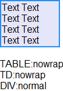
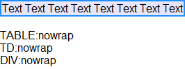
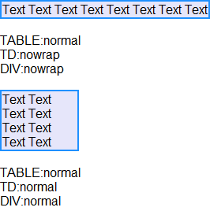
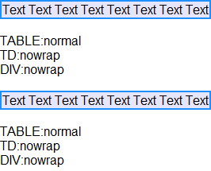

根据 CSS2.1 规范中的描述，'white-space' 特性声明了元素内的空白如何处理。
| 取值 | normal | pre | nowrap | pre-wrap | pre-line | inherit |
|---|---|
| 初始值 | normal |
| 作用于 | 所有元素 |
| 继承性 | 可以继承 |
| 百分比 | N/A |
可知，'white-space' 特性可以用作于所有的 HTML 元素，并且默认是具备继承性的。
同时，CSS2.1 还规定，用户端必须首先以优先级的顺序基于如下机制为每一个特性分配一个指定值（specified value）：
关于 'white-space' 特性的详细信息，请参考 CSS2.1 规范 16.6 White space: the 'white-space' property 中的内容。
关于 指定值 的详细信息，请参考 CSS2.1 规范 6.1.1 Specified values 中的内容。
在 IE6 IE7 IE8(Q)中，若 TD 元素没有明确设定 'white-space' 特性，其值为继承自其父元素的值，则其内的子元素不再能够自动继承 TD 的 'white-space' 特性。并且若 TD 元素明确设定了 'width' 特性，则 TD 元素本身的 'white-space' 特性自动变为了初始值 'normal'。
若没有明确地为 TD 元素的子元素设置 'white-space' 特性，可能会在不同浏览器中产生非常大的表格布局差异。
| IE6 IE7 IE8(Q) |
|---|
根据规范中对于 'white-space' 特性的描述，若为一个 TABLE 元素设置了 white-space:nowrap; ，且其内子元素均没有明确设定 'white-space' 特性，则子元素均会自动继承 TABLE 元素的 white-space:nowrap;。
分析以下代码：
<body style="font:16px Arial;"> <table id="table1" style="white-space:nowrap; width:100px; background:dodgerblue;"> <tr> <td
id="td1" style="background:lavender;"> <div id="div1">Text Text Text Text Text Text Text
Text</div> </td> </tr> </table> <div id="info1"></div>
<script> window.onload = function() { function $(id) { return document.getElementById(id); } if
(!window.getComputedStyle) { window.getComputedStyle = function($target) { return $target.currentStyle;
}; } $("info1").innerHTML = "<br />TABLE:" + getComputedStyle($("table1"), null).whiteSpace +
"<br />TD:" + getComputedStyle($("td1"), null).whiteSpace + "<br />DIV:" +
getComputedStyle($("div1"), null).whiteSpace; } </script> </body>
上面代码为 TABLE 元素设置了 white-space:nowrap，分别测试了 TABLE 元素、其内部 TD 元素以及 TD 内的 DIV 子元素的 'white-space' 特性计算后的值。
这段代码在不同浏览器中运行结果如下：
| IE6 IE7 IE8(Q) | IE8(S) Firefox Chrome Safari Opera |
|---|---|
|  |  |
可见，
下面为 TD 元素设定一个明确的 white-space:nowrap，查看其自身及其子元素的 'white-space' 特性的值。
分析以下代码：
<body style="font:16px Arial;"> <table id="table2" style="width:100px;
background:dodgerblue;"> <tr> <td id="td2" style="white-space:nowrap;
background:lavender;"> <div id="div2">Text Text Text Text Text Text Text Text</div>
</td> </tr> </table> <div id="info2"></div> <br /> <table
id="table3" style="width:100px; background:dodgerblue;"> <tr> <td id="td3"
style="white-space:nowrap; background:lavender; width:100px;"> <div id="div3">Text Text Text
Text Text Text Text Text</div> </td> </tr> </table> <div
id="info3"></div> <script> window.onload = function() { function $(id) { return
document.getElementById(id); } if (!window.getComputedStyle) { window.getComputedStyle =
function($target) { return $target.currentStyle; }; } $("info2").innerHTML = "<br />TABLE:" +
getComputedStyle($("table2"), null).whiteSpace + "<br />TD:" + getComputedStyle($("td2"),
null).whiteSpace + "<br />DIV:" + getComputedStyle($("div2"), null).whiteSpace;
$("info3").innerHTML = "<br />TABLE:" + getComputedStyle($("table3"), null).whiteSpace + "<br
/>TD:" + getComputedStyle($("td3"), null).whiteSpace + "<br />DIV:" +
getComputedStyle($("div3"), null).whiteSpace; } </script> </body>
上面的代码分为两组，每组中均是为 TD 元素明确的设置了 white-space:nowrap ，区别仅为第一组的 TD 元素没有明确设置 'width' 特性，则为默认的 'auto'。而第二组设置了 TD 元素的 'width' 特性值为 100px。
这段代码在不同浏览器中运行结果如下：
| IE6 IE7 IE8(Q) | IE8(S) Firefox Chrome Safari Opera |
|---|---|
|  |  |
可见：
在 MSDN 中关于 NOWRAP Attribute | noWrap Property 的描述中：
Care should be taken when the noWrap property is used in conjunction with the width attribute of table
or td elements. Wordwrap still occurs in a td element that has its WIDTH attribute set to a value
smaller than the unwrapped content of the cell, even if the noWrap property is set to true. Therefore,
the WIDTH attribute takes precedence over the noWrap property in this scenario. If a td element has its
noWrap set to true and the WIDTH attribute of its table element is set to a smaller dimension than the
rendered content of the td element, wordwrap does not occur. In this case, the noWrap setting takes
precedence over the WIDTH attribute.
在为 TABLE 或 TD 元素同时设定 noWrap 属性及宽度属性时需小心。若 TD 元素设定的宽度小于其内容不发生换行时的宽度时，即使 TD 元素设定了 white-space:nowrap（或者 nowrap 属性），仍然会发生换行。
明确地为 TD 的子元素设置 'white-space' 特性，避免使 TD 元素自动继承父元素的 'white-space' 特性。或者避免同时为 TD 元素设置宽度及 white-space:nowrap（或是 nowrap 属性）。
| 操作系统版本: | Windows 7 Ultimate build 7600 |
|---|---|
| 浏览器版本: |
IE6
IE7 IE8 Firefox 3.6.3 Chrome 5.0.396.0 dev Safari 4.0.5 Opera 10.53 |
| 测试页面: | td_whitespace.html |
| 本文更新时间: | 2010-08-10 |
white-space nowrap normal inherit 继承 空白 折行